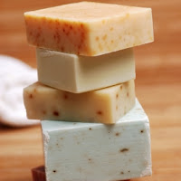

Chemistry Form 5: Chapter 5 - Making of Soap

Soaps are sodium or potassium salts of fatty acids. Soaps are prepared by hydrolyzing fats or oils under alkaline condition. This reaction is called saponification.
· The fats or oils are hydrolysed first to form glycerol and fatty acids. The acids then react with an alkali to form the corresponding sodium or potassium salts.
· The soap formed can be precipitated by adding sodium chloride. This is because sodium chloride lowers the solubility of soap in water.
· The glycerol and excess sodium hydroxide solution are removed by rinsing the soap formed with water.
· Soaps feel slippery and form lather when they are shaken with water.